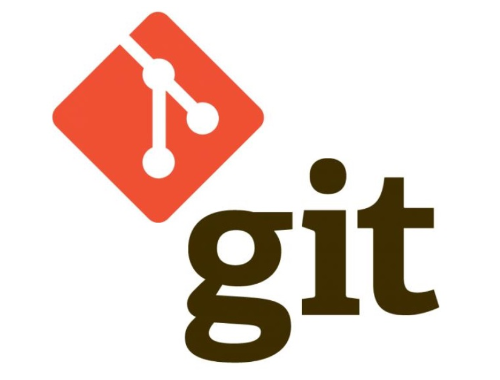

|
|
|
|  |
Actualmente nuestra sociedad se desenvuelve por medio del software, pues lo encontramos presente en
la mayoría de productos y servicios de los cuales hacemnos uso diariamente. Es por este motivo que los profesionales en desarrollo de software tienen la necesidad de manejar y conocer diferentes tipos de herramientas que les permitan gestionar y controlar de una manera organizada el desarrollo y mantenimiento de cualquier producto que así lo requiera. Una de estas herramientas es Git, un software diseñado por Linus Torvalds, el cual permite llevar a cabo el control absoluto de productos diseñados con código de fuente, controlando y registrando los cambios que se realizan durante la edición de código dentro de un proyecto el cual puede ser modificado no por uno solamente, sino por varios desarrolladores los cuales modifiquen o aporten a la construcción del mismo. Algunas de sus principales características son:- No dependen de un repositorio central. - Es software de tipo libre. - Mantiene un historial completo de versiones. - Sistema de trabajo con ramas que dan potencia a su rendimiento. |